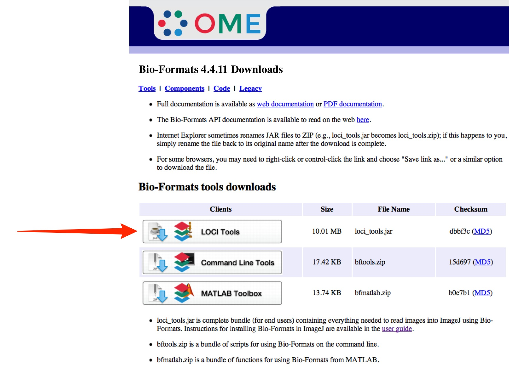
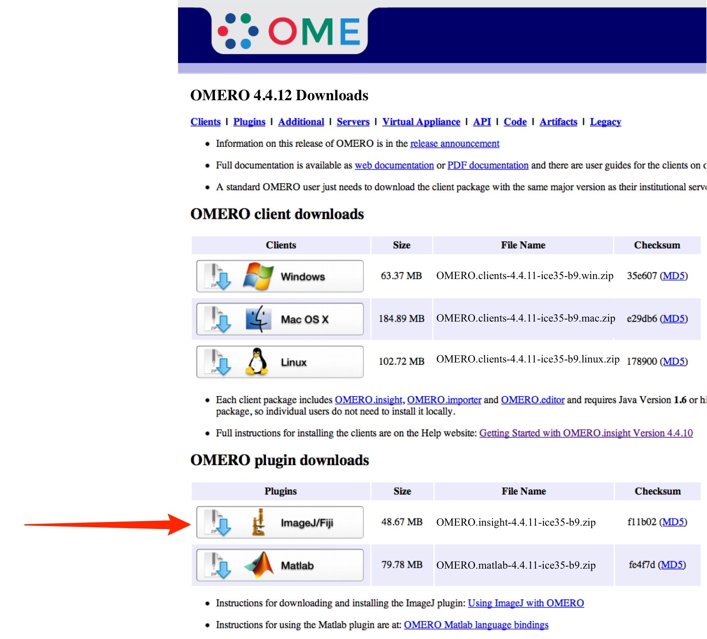
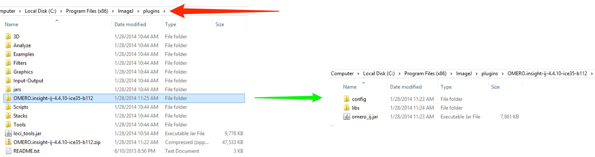
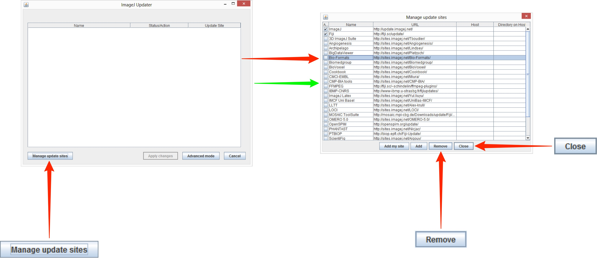
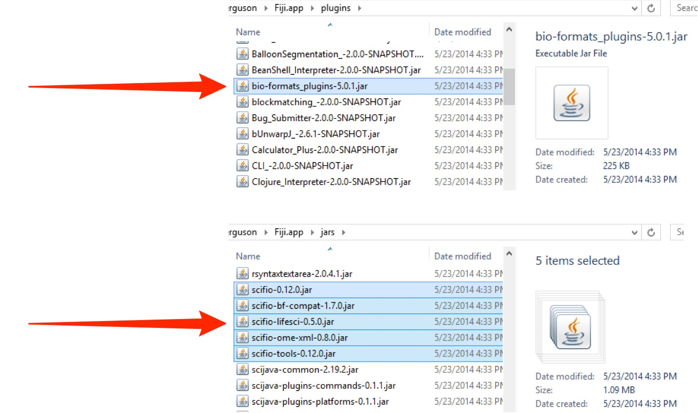

User Help
- User Help Home Page
 Quickstart User Guides
Quickstart User Guides
- Workflow User Guides
 OMERO.insight
OMERO.insight
- OMERO.web
- Other OMERO Applications
- More
Using ImageJ and Fiji with OMERO
This initial section assumes you have never installed ImageJ or Fiji before and covers both OMERO version 4.4.x and version 5.0.x.
You can tell what version your OMERO is from the fine print at the bottom of the login screen.

Upgrading from OMERO version 4.4.x to OMERO version 5.0.x is dealt with in a later section.
In order to connect to an OMERO server and use the data stored there directly in ImageJ and Fiji, plugins have to be installed. The following instructions guide you through the download, installation and use of ImageJ, Fiji and the plugins.

Downloading and installing ImageJ
Download the latest version of ImageJ for your platform from the website:
http://rsbweb.nih.gov/ij/download.html

On Windows run the set-up programme (either from the Downloads folder or when prompted by download Wizard) and follow instructions to install ImageJ.
On Mac, extract the .zip archive and drag the ImageJ folder to your Applications folder.
On Linux extract the .gz archive and double click the “run” script.
Further install instructions can be found on the ImageJ web site (above).
Downloading and Installing Fiji
Fiji (Fiji is Just ImageJ) is a distribution of ImageJ together with Java, Java3D and a lot of plugins organized into a coherent menu structure.
Download the latest version of Fiji for your platform from the website:

The Fiji downloads page includes installation instructions.
On Windows it is recommended you install the Fiji executable within your user space for example: C:\Users\[your name]\Fiji.app, not in the normal C:\Programs directory, otherwise future updating may fail.
On a Mac, mount the .dmg and drag the Fiji folder to your applications folder.
On Linux extract the .gz archive and double click the “run” script.
On Windows, depending on how the downloaded archive was expanded, the ImageJ executable can appear one level deeper in the Fiji.app folder than in ImageJ.
On Mac Fiji.app appears as a single .app.

Installing Plugins for ImageJ and Fiji
The location for the plugins in ImageJ and Fiji are essentially the same, with the following differences in gaining access to them:
- on Windows, Fiji sometimes has an additional level of hierarchy, depending on how the downloaded archive was expanded, for example:
- on Mac, Fiji is a .app package, so to see the plugins folder you must right-click the Fiji.app and select Show Package Contents:
ImageJ - Windows (32 bit):
Local Disk (C:) > Program Files (x86) > ImageJ > plugins
Fiji - Windows (32 bit):
Local Disk (C:) > username > Fiji-win32 > Fiji.app > plugins


Note
After installing or upgrading plugins, you need to restart ImageJ or Fiji to be able to use the plugins.
Note
There are some differences between ImageJ and Fiji, and for OMERO version 4.4.x and OMERO version 5.0.x regarding which plugins are needed. These are outlined below.
Using ImageJ with OMERO version 4.4.x
Two plugins are required:
- loci_tools.jar
- OMERO.insight-ij
-
Download the latest 4.4.x version of the LOCI Tools plugin from:
http://downloads.openmicroscopy.org/latest/bio-formats4
Check there is a “Bio-formats 4.4.x Downloads” heading on the page.
 -
Save or move the downloaded file into the ImageJ > plugins folder.

Download the latest 4.4.x version of the OMERO.insight-ij plugin from:
http://downloads.openmicroscopy.org/latest/omero4
Check there is a “OMERO 4.4.x Downloads” heading on the page.
-
Save or move the .zip archive to the ImageJ > plugins folder.
Extract the archive into the plugins folder to give a folder named “OMERO.insight-ij-x” where x is the version number.
The OMERO.insight-ij plugin consists of a folder with a number of components inside.
Leave the complete OMERO.insight-ij plugin folder with its components in the ImageJ > plugins folder.
Note
Some Windows unzip apps create a double folder enclosing the plugin.
Check, and if this has happened, copy the inner OMERO.insight-ij-4.4.x folder into the ImageJ > plugins folder.The OMERO.insight-ij-4.4.x.zip archive can be left in the plugins folder or deleted.
Using ImageJ with OMERO version 5.0.x
Two plugins are required:
- bioformats_package.jar
- OMERO.insight-ij
-
Download the latest 5.0.x version of the Bioformats Package plugin from:
http://downloads.openmicroscopy.org/latest/bio-formats5
Check there is a “Bio-formats 5.0.x Downloads” heading on the page.

-
Save or move the downloaded file into the ImageJ > plugins folder.

-
Download the latest 5.0.x version of the OMERO.insight-ij plugin from:
http://downloads.openmicroscopy.org/latest/omero5
Check there is a “OMERO 5.0.x Downloads” heading on the page.

-
Save or move the .zip archive to the ImageJ > plugins folder.
Extract the archive into the plugins folder to give a folder named “OMERO.insight-ij-x” where x is the version number.
Leave the complete OMERO.insight-ij plugin folder with its components in the ImageJ > plugins folder.
Note
Some Windows unzip apps create a double folder enclosing the plugin.
Check, and if this has happened, copy the inner OMERO.insight-ij-5.0.x folder into the ImageJ > plugins folder.
The OMERO.insight-ij-5.0.x.zip archive can be left in the plugins folder or deleted.
Upgrading ImageJ from 4.4.x to 5.0.x
To upgrade ImageJ for use with an OMERO version 5 server, you need to:
-
Go to the ImageJ > plugins folder.
Delete the loci_tools.jar and the OMERO.insight-ij-4.4.x folder.
-
Download the latest 5.0.x version of the Bioformats Package plugin from:
http://downloads.openmicroscopy.org/latest/bio-formats5
(See screenshot above)
Check there is a “Bio-formats 5.0.x Downloads” heading on the page.
Save or move the downloaded file into the ImageJ > plugins folder.
-
Download the latest 5.0.x version of the OMERO.insight-ij plugin from:
http://downloads.openmicroscopy.org/latest/omero5
(See screenshot above)
Check there is a “OMERO 5.0.x Downloads” heading on the page.
Save or move the downloaded file into the ImageJ > plugins folder.
Note
The bioformats_package.jar you need, to use ImageJ with OMERO version 5.0.x, is incompatible with loci_tools.jar, and ImageJ will not work with OMERO if both are in the plugins folder.
We suggest that if you wish to access both 4.4.x and 5.0.x versions of OMERO from ImageJ that you run two appropriately named copies of ImageJ each with the appropriate plugins for the version.
Using Fiji with OMERO version 4.4.x
Fiji changed the way it bundles and updates the plugins and jars needed to work with OMERO version 4.4.x in April 2014. Versions of Fiji since require the following steps to work with OMERO version 4.4.x.
Two plugins are required:
- loci_tools.jar
- OMERO.insight-ij
and incompatible Bio-Formats and SCIFIO plugins and jars need to be deleted.
Using a new or existing Fiji app download, start the app and allow it to go through and complete the update procedure, or from the menu select Help > Update Fiji.
In the ImageJ Updater window, click Manage update sites.
Highlight the Bio-Formats entry in the list.
Click Remove, and then Close.
Quit Fiji.
Go to the Fiji app > plugins folder on your hard drive and delete bio-formats_plugins.jar.
In the Fiji app > jars folder select and delete the five jars with the prefix scifio-.
-
Download and install the latest 4.4.x version of the OMERO.insight-ij plugin and loci_tools.jar as described in Using ImageJ 4.4.x above.
Subsequent automatic Fiji updates should not affect these installations.
Using Fiji with OMERO version 5.0.x
As Fiji comes bundled with the components of Bioformats Package, there is no need to download and install this plugin.
Two actions are required for both a fresh installation and to upgrade from version 4.4.x:
- select the appropriate Bio-Formats jars (equivalent of LOCI Tools in ImageJ) using the update menu
- add the OMERO.insight-ij plugin
-
Select Help > Update Fiji.
Fiji will check for updates and after following prompts you will end up at the ImageJ Updater Window.
Click on Manage update sites.

-
In the Manage update site window, select Bio-formats 5.
If Bio-formats 4 is checked, uncheck it.
Click Close.
Click Apply Changes.
Fiji will fetch and install the updates.

Download the latest 5.0.x version of the OMERO.insight-ij plugin from:
http://downloads.openmicroscopy.org/latest/omero5
Check there is a “OMERO 5.0.x Downloads” heading on the page.
-
Save or move the .zip archive to the ImageJ > plugins folder.
If upgrading delete the 4.4.x version of OMERO.insight-ij.
Extract the archive into the plugins folder to give a folder named “OMERO.insight-ij-x” where x is the version number.
Leave the complete OMERO.insight-ij plugin folder with its components in the ImageJ > plugins folder.
Note
Some Windows unzip apps create a double folder enclosing the plugin.
Check, and if this has happened, copy the inner OMERO.insight-ij-4.4.x folder into the ImageJ > plugins folder.Delete the OMERO.insight-ij-5.0.x.zip archive from the plugins folder.
Accessing OMERO using ImageJ and Fiji
-
Launch the ImageJ or Fiji application and click on the Plugins menu.
Select OMERO > Connect to OMERO.
A version of OMERO.insight will open and can be used as normal.

-
As ImageJ needs to load the plugin software, it can take a minute or two for the OMERO login screen to appear, and then another two or three minutes for the progress bar to start moving and complete.
Enter your OMERO server address, if needed, and Username and Password.
Click Login.

-
Double click on the image in the data tree or select the image and View > View in ImageJ in the contextual menu.
The Bio-Formats Import Options window opens.
Select the check box to set Bio-Formats to automatically check for updates.
Select parameters and click OK.
Click OK and the Bio-Formats Import Options window opens.
Select parameters and click OK.
Your image will open in the ImageJ viewer.

You will then be taken to the OMERO.insight Data Manager screen.
Note
If you quit OMERO.insight and then connect again during the same ImageJ session, logging in and launching the OMERO plugin will be much quicker. So if you intend using the OMERO plugin through ImageJ again soon, it may be worth leaving your ImageJ application running.
All Tutorial Material is available on line at: help.openmicroscopy.org
The Main OME website is at: www.openmicroscopy.org